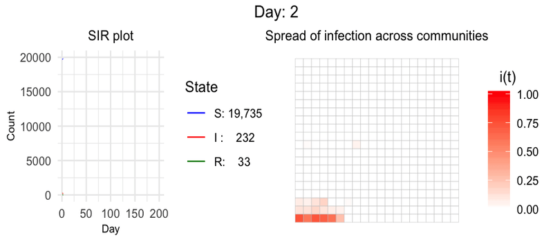
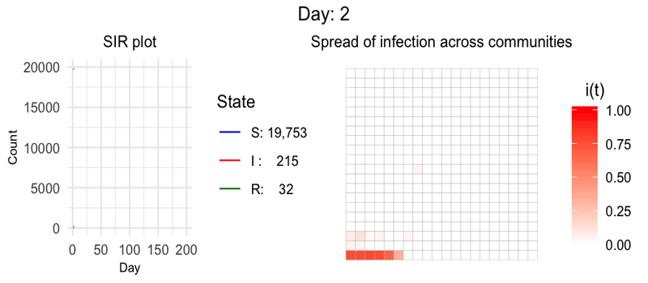
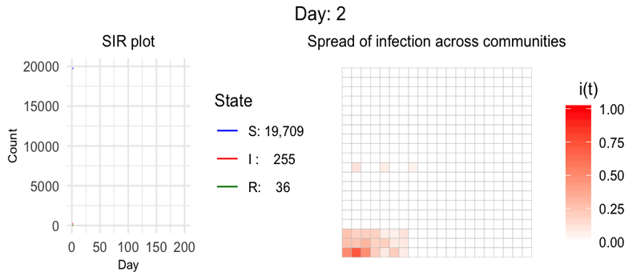
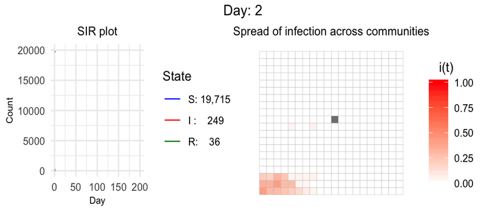
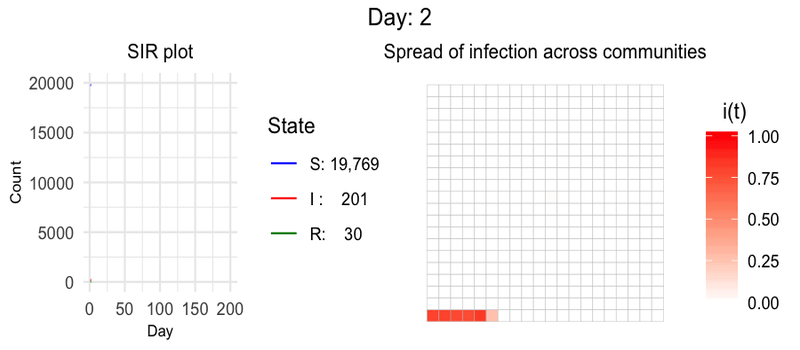

How epidemics spread exponentially, and how social distancing and popular places affect it?
Disclaimer: I am a data scientist and not an epidemiologist. This simulation was created for educational purposes only and is not intended to be used for decision-making.
Simulation using the SIR model with population movement dynamics.
The outbreak of the novel coronavirus (COVID-19) has infected millions in less than half a year. What started in a city has been declared as a pandemic by WHO. The virus spreads exponentially and doubles every few days, that is without any preventive measures.
This exponential growth is scary but it can be slowed down if people practice "social distancing" and other lockdown measures. To understand the importance of these actions, the spread of such disease in a hypothetical city will be simulated here. The spread of the disease will be modeled through a SIR model over a geometric region divided into various communities. People can travel between such communities and their movement will be controlled using a transition probability matrix. The idea of the people movement is based on the first-order Markov chain and the movement will only depend on their current location. By updating the transition probabilities, we will simulate different experiments.
What is a SIR (Susceptible - Infectious - Removed) Model?
The SIR model is one of the most studied and robust compartmental models, and many models are derivatives of this basic form. The model consists of three compartments: \(S(t)\) for the number of susceptible, \(S(t)\) for the number of infectious, and \(S(t)\) for the number of removed (recovered, deceased, or immune) individuals at a given time \(t\). SIR model is dynamic in the sense that the count of individuals in the three states changes over time. We will model the SIR without vital dynamics, that is, no birth or death other than from the disease itself is considered, making the total population constant. One idea behind this is that the dynamics of disease like COVID- 19 is much faster than the dynamics of birth and death.
\[S(t) + I(t) + R(t) = N (a \: constant \: value)\]The SIR model can be defined as the set of three Ordinary Differential Equations (ODE):
\[\frac{ds\left(t\right)}{dt}=-b s\left(t\right)i\left(t\right)\] \[\frac{di\left(t\right)}{dt}=b s\left(t\right)i\left(t\right)-k i\left(t\right)\] \[\frac{dr\left(t\right)}{dt}=k i\left(t\right)\]Where, \(s(t)\), \(i(t)\), and \(r(t)\) are the susceptible, infected and removed fraction of the population at time \(t\). \(b\) is the infection rate and \(k\) is the recovery rate. One thing to note is that since we are modeling without vital dynamics, the sum of three ODE is 0 representing no new addition or deletion of the population from outside
\[\frac{ds\left(t\right)}{dt} + \frac{di\left(t\right)}{dt} + \frac{dr\left(t\right)}{dt} = 0\]Values of infection and recovery rate?
Before we move forward, we will have to estimate the values of infection and recovery rate. We can do this by doing a grid-search over the two parameters to find the optimal values which minimize the RMSE between modeled and actual counts of both the infectious and removed states. Let's make some assumptions first:
- Since we are considering \(R\) state as both recovered and dead, we will add the deaths and recovered counts into one value
- We will use Germany data because:
- Germany has crossed the peak infections point and active cases are going down for the last 1 month [1]
- Germany also has one of the largest test counts and started testing and recording data from the first patient
- Since all the patients usually get infected in the model, we can keep the initial \(S(0)\) as total infections count to date
- Both the error in the infectious and recovered state will be given equal weights while calculating RMSE
Observations from the above-mentioned approach:
- The parameters were estimated as \(b=0.2621\) and \(k=0.07\) This means that the average day a patient remains in the infectious state is around 2 weeks \((\frac{1}{k})\). Which aligns with the actual range of recovery duration [2]
- The \(R_{0}\) value or the Basic reproduction number of Covid-19 is \(\frac{b}{k} = 3.74\). While the actual expected value is 1.4–5.7 [3]
- The plot of Predicted and Actual counts are highly correlated and aligns with each other
Experiments - Lockdown
In the following experiments, simulations will be performed in a city that is divided into 400 communities (in a \(20 \: * \: 20\) grid). Each individual will belong to one community (we can call it his home location) and can move to other communities based on some probabilities. These transition probabilities will be calculated as follows:
- For a given community \(i\), its neighbors will be stored in a list named '\(to\)'
- Some non-neighbors will be randomly selected and added in the same list '\(to\)'
- Random probabilities will be assigned to each location present in the list '\(to\)'. These probabilities will be the probabilities of movement from community \(i\) to the locations in the list '\(to\)'
- Step 1-3 will be repeated for all the communities
Experiment 1: SIR model with people moving across communities without any restriction.
In this experiment, we will see how the disease will spread if no preventive measure is taken and all the individuals are allowed to travel without any restriction. (To learn how to create the below animation check out the following article - Animate any plots in R using gifski )
Without any restriction, \(90\%\) of people got infected in \(200\) days with maximum active cases of \(2,437\) on day \(103\). The graph reached its first plateau around day \(50\). After day \(75\) the slope again started increasing and peaked at day \(103\). In the right animation, we can see that the highly infected regions reached the diagonal of the city grid and a new infection hotspot was created on the bottom right corner around day \(100\).
Experiment 2: SIR model with 25% movement restriction.
In this experiment, people remain in their home community with a probability of \(0.25\) and therefore, simulating a situation where \(25\%\) movement is restricted.
In this case, the \(88\%\) population still got infected. But the peak of infection reached \(13\) days later and the plot was flatter by a small amount.
Experiment 3: SIR model with 50% movement restriction.
In this experiment, people remain in their home community with a probability of \(0.50\) and therefore, simulating a situation where \(50\%\) movement is restricted.
With a 50% lockdown, we were able to reduce the impact of the disease and only \(49\%\) of the population got infected in 200 days. The maximum active cases in a day also reduced to only \(1,053\) and occurred on day \(146\) (while in experiment 1 it happened on day 103). We can say that restricting the movement by half, significantly helped in "flattening the curve".
Experiment 4: SIR model with 75% movement restriction.
In this experiment, people remain in their home community with a probability of \(0.75\) and therefore, simulating a situation where \(75\%\) movement is restricted.
75% lockdown significantly reduced the spread of the disease. In 200 days only \(30\%\) population got infected and infection peaked with a value of only \(470\) at \(147th\) day (44 days later than without lockdown case). We can also see in the heatmap animation, that the spread is very slow. Compared to the 100th day for no lockdown, 75% lockdown has very little spread on the 100th day with infections confined in a small area in the center-left part. Since 100% of full lockdown is not possible, we can stop our lockdown analysis at 75%.
With this analysis, we can conclude that a small amount of lockdown \((25\%)\) will only reduce the impact of disease by a small amount. But as we increase the lockdown to above \(50\%\), the effect will be significant in Flattening the curve.
Experiments - Addition of a popular location like supermarket
Experiment 5: SIR model with a popular place in the center of the city.
In this experiment, we will see how the presence of a popular place like supermarkets, shopping malls, etc. affects the spread of the disease. We will add one such place in the center of the city which will be visited by everyone once a week.
Having a popular place which is visited by everyone enabled the easy transfer of virus to all the parts of the city. Because of this, the peak of infections reached much earlier (on \(66th\) day) with a higher active cases count of \(3,255\) (for experiment 1, the peak reached on \(102 th\) day with active cases of \(2,437\)).
In the right heatmap, we can also see that the center community (which has the popular place) got highlighted at the very beginning itself which helped in spreading the virus to different parts. On the \(100th\) day, the spread crossed the diagonal part of the city (while in all the previous experiments spread never crossed the diagonal on day 100).
Experiment 6: SIR model after locking down the popular place.
In this experiment, we will put the popular place (which aided in spreading the disease) on lockdown, and see how it affects the spread. This means no one is allowed to go to the popular place. Otherwise, all people are free to move to other communities.
The grey cell in the center shows the popular place with 0 population in any of the three states. The result was almost similar to that of experiment 1, with a marginal reduction in total infections.
Experiment 7: SIR model with the popular place being the only place allowed to go.
In this experiment, we will only allow the people to visit the popular place and all other movements are restricted.
This time the infection was very low. Since everyone was only allowed to move to one place and that too even with a low probability, the disease was well contained.
Experiments - Two cities dynamics
Experiment 8: Modeling between two cities.
In this experiment, two cities are connected via a single route. Infection was started in City 1 and slowly it spread to City 2. The transition probability matrix was created as follows:
- Transition matrix was created randomly for the two cities (\(TM_{1}\) and \(TM_{2}\))
- Both cities were combined into one large matrix:
\(TM_{1}\) 0 0 \(TM_{2}\) - Center locations of both the cities were selected as their airport
- Probability of all individual in a city to go to the airport was changed to \(\frac{1}{14}\) (expecting people goes to another city once in two weeks)
- Transition matrix was normalized row-wise to make the sum of probabilities as 1

We started the infection from the City 1 which spread to the City 2. We can see that City 1 has the infection peak earlier with the highest active cases of \(4,786\). City 2 got a peak \(40\) days after City 1 as it took some time for the virus to reach there. The magnitude of disease was also low with a more flatten curve in the City 2 and the spread was more gradual. Since there was a single source of disease in City 2 and it was connected to all parts of the city, the disease was more evenly spread throughout the city as compared to City 1 which shows a 'wave' like phenomenon.
Conclusion
Without claiming an accurate epidemic modeling, our aim in this was to get an insight into how different measures and people's movements affect the spread of an infectious disease like COVID-19. While travel restriction on small scale didn't provide many benefits, 50% and above restrictions slowed down the spread significantly and made the curve flatter. This means that if anyone who gets sick with COVID-19 and requires hospitalization will have access to a bed and proper treatment. This can be one temporary measure to curb the pandemic while more durable solutions are implemented.| Restriction in movement (%) | Total Infected (Out of 20,000) |
Peak reached on |
|---|---|---|
| 0 % | 18,083 | Day 103 |
| 25 % | 17,597 | Day 116 |
| 50 % | 9,818 | Day 146 |
| 75 % | 5,992 | Day 147 |
The source code can be found in my Github